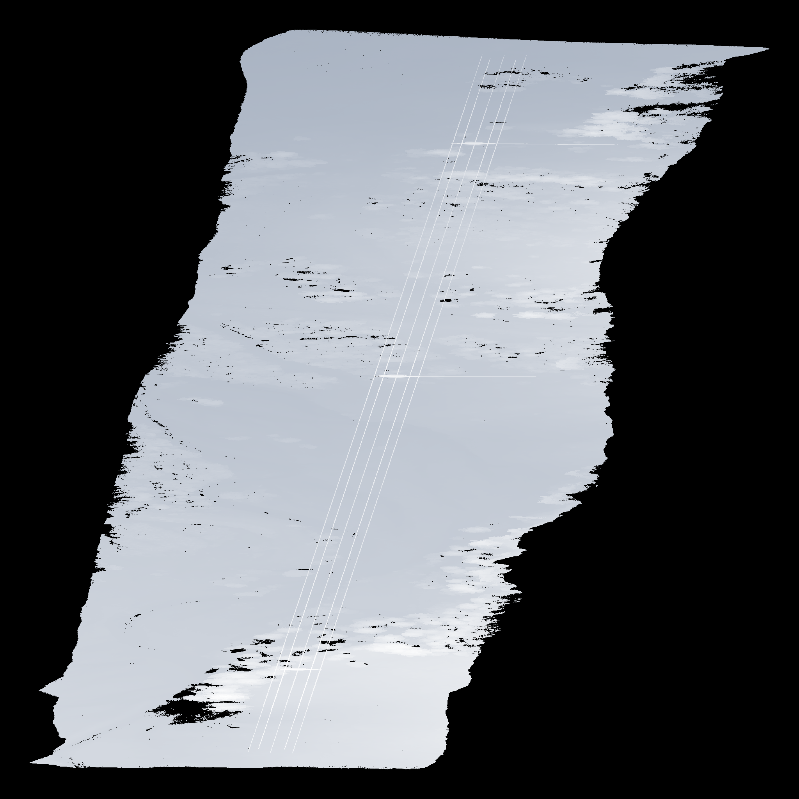

Reuse visual understanding
No dedicated 3D segmentation
network trained for this example

t1z5b_full_session / initial_top · Paths from the original PROPOSE actions
TP 245,931 · FP 26 · FN 6,610
59,624,089 original records / all 252,541 targets in the recall denominator
Five main wires + two transverse cables / development scene / unknown targets are misses
No dedicated 3D segmentation
network trained for this example
Views, zooms and associations
chosen explicitly by the observer
Explicit regions return point IDs
Review, replay and export checks
WireSight / Multiview visual wire annotation
Conversation-VLM prototype / held-out, unattended and per-wire completeness checks remain open